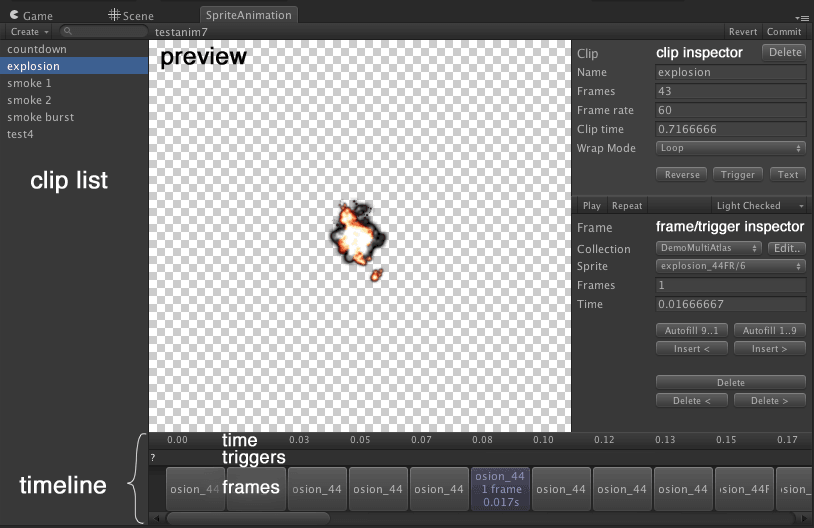

Documentation
Script Reference
Forum
Documentation
Script Reference
Forum
All editing of a sprite animation collection is carried out in the Sprite Animation editor. This page will go through the different operations you can perform in this editor.
As with the sprite collection editor, all editing operations are performed on a local copy of the data, and are only saved when the changes are Committed.

Create - Brings up a pop up menu to create new clips and create a copy of existing clips.
Clip list - Displays a list of the clips in the current collection. You can click to select clips, or if you prefer, you can use the up and down arrow keys.
Commit - Commits changes to the sprite animation collection and saves changes.
Revert - Reverts to the state of at last Commit.
Play - Plays the current clip and displays a preview in the preview area.
Repeat - Useful for one shot (Once) clips - will play the clip once it has stopped playing. You can edit the clip whilst its playing.
Selecting a clip will bring up the clip inspector for the selected clip. This lets you edit various clip properties.
If you have a frame or trigger selected, the relevant inspector is displayed as well.
Keyboard shortcuts.
Enter - Play.
Up, Down arow - Select previous/next clip in list.
F - focus display in the preview window.
The timeline displays the current frames in the clip.
You can click to select a frame, drag the frame to reposition it in the clip. You can also resize the current frame by clicking and dragging on the right end of the clip.
You can zoom in and out in the timeline to display less or more information by scrolling while holding down the control or option (on Mac).
Click on the + button at the end of your clip to insert a new frame. This creates a copy of the last frame in your clip. You are free to change the sprite and/or any other properties.
You can also move triggers by clicking and dragging them. You can insert new frames by double clicking in the trigger section.
Keyboard navigation.
Left, Right arrow or , and . - Select the previous and next frames in the clip respectively. You can hold down the key to scrub frames.
Home, End - Select the first and last frame in the clip respectively.
Escape - Deselect the currently selected frame.
Delete - Deletes the currently selected trigger / frame.
You can pan in the preview window by clicking and dragging. You can also zoom in/out by using the mousewheel.
Name - clip name. The clip name should be unique, and you will be prompted when you commit if you have any duplicat names.
Frames - read only field displaying the number of frames in the current clip.
Frame rate - The default frame rate for this clip. This can be overriden when playing the clip. Changing the frame rate will affect clip time.
Clip time - The total clip time in seconds. Changing this will change the frame rate.
Wrap Mode - Options are: * Loop - The animation is looped indefinitely. * LoopSection - A part of the animation is played once and a second section is looped indefinitely. * Once - The animation plays once and then stops on the last frame. * PingPong - The animation sequence is played forward, then in reverse. The last frames are only played once. Eg. 0 - 1 - 2 - 3 - 2 - 1 - … * Random Frame - One random frame is picked, and the animation stops after selecting it. This behaves like Single, but picks one random frame out of a selection. * Random Loop - Picks a random frame, and loops from that start point. This is useful if you have multiple bird animations, for instance, and you wish to have them play out of sync. * Single - Simply switches to this sprite. This is useful for continuity in your code, and also for placeholders before you have any animations set up.
Reverse - Reverses the frames in the current clip.
Trigger - Adds a trigger to the clip. The trigger is created at the first available frame currently without a trigger. You are free to move it once created, or if you prefer, you can double click in the trigger section to create a trigger at a particular frame.
Text - Lets you edit/type in sprite names for your clip. If you wish to have a sprite display for more than one frame, append a semicolon followed by the number of frames, eg. smoke5;10 will display sprite smoke5 for 10 frames. Clicking on process will process the text.
Collection, Sprite - Selects the sprite for this frame.
Frames - The number of frames this sprite is displayed for. Changing this will affect the time field.
Time - The number of seconds this sprite is displayed for. Changing this will affect the frames field.
Autofill - Looks at the selected frame, and looks for following sprite Ids. Eg. If your last frame is spritesheet/1, it will look for spritesheet/2, 3, 4 and so on until it can't find any more ids, or a frame with that id is found. 1..9 will look for sprite numbers ascending, and 9..1 will look for descending numbers from the currently selected frame.
Insert - Inserts a frame before or after the selected frame.
Delete - Deletes the current frame, all frames before or all frames after the currently selected frame.
Frame - The current frame the trigger is applied on.
Trigger info / float / int - Values used in the callback. You can enter any relevant data in these fields.
Animation editor operators is a powerful plugin system built into the animation editor. It can be used to extend the animation editor without having to change the source code to the editor - the only requirement is that your animation editor class inherits from the base operator class. A vast majority of the functionality in the editor is built as animation operators.
In the clip inspector - Reverse, Trigger and Text.
In the frame inspector - Autofill, Insert and Delete.
In the create menu - Copy.
Refer to Animation Editor Operators